September 2010. I
finally fround the photos of the pipe, in a cardboard box in the
shed. The photos were taken back in 1979.
September 2010. I
finally fround the photos of the pipe, in a cardboard box in the
shed. The photos were taken back in 1979.AlaskaStories.com
The Smoking Page
Whadaya mean what's smoking got to do with Alaska Stories? Aint you already lit that stinky cigar before you settled back to read this dribble?
So some of these cigar smokers can be caught sneaking around the corner to smoke a pipe now and again, for the same reason they smoke cigars of course, the story value. That's all you can get out of smoke, if you wisely handle the stuff like the poison it is.
Our smoke story manager
Nice thing about pipes, unlike cigars, you don't burn the whole thing up each time you wanna smoke, so you got this neat little thing about which you can tell smoking stories. Dees guys that do anything will tell stories about what they do, usually the same one over and over again. That's why you just as well be smoking while you patiently humor them.
In Alaska, the pipe smoking tradition goes back as far as the arrival of the humans, and from there it goes back to the first irresponsible little kid playing with matches. The first smoke-breathers impressed their friends by blowing smoke, not unlike what you are reading. Then they lit-up some stuff that impressed themselves with the effects, and then they couldn't stop because some of it wouldn't let them. Ya'll wanna be careful about what you smoke, because it is all bad for you, as it should be, to keep away the faint.
Smoking was the reason humans inhabit the entire planet, instead of just that first famous garden plot. What they smoked stunk up the hut so bad they kept getting run out by those intolerant non-smoke-breathers and their lawyers. By the time the smoking ritual arrived in Alaska with the first guys being run that far north and then across the Bering Strait, they had the construction of smoking pipes down to an art, literally.
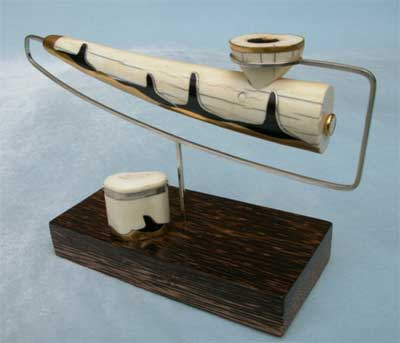
Orca Pipe (its story down the page a ways)
Siberian style pipes
Siberian style pipes got their name because the American anthropologists who wrote books in English so I could read them, figured Siberia was more exotic-sounding than Alaska. If Russian anthropologists prevailed, the pipes would have been Alaska styled pipes. The style is evident in Siberia and Alaska.
There are two basic types of Siberian styled pipes, those made from walrus ivory, which conform to walrus tusk shapes, if you can imagine such a thing, and those made from wood, which display a few similar features, very few.
Like certain other items, the artistry of smoking pipes up north didn't get to hopping until cross-cultural trade introduced neat new stuff to use for making boring old things. When guns showed up, up north, the walnut and other dark woods of the broken stocks became more appealing than spruce and birch wood. And the lead bullets offered an easily worked metal that was fun stuff for pipes. St. Lawrence Island locals became best known for the resulting style of lead-inlay walnut pipes. But they had it backwards, which is why the style did not spread around the world. They made beautiful wood pipes with inlaid lead stems that they chewed on, and lead bowls from which they smoked nicotine and lead fumes, and didn't recognize why the old folks were never smokers. Well, we humans are a new experiment, and we don't have all the lessons down yet. Metal inlay in wood is one of several varying characteristics of Siberian style pipes.
The base of rifle cartridges made ideal bowls for the pipes, and were commonly used. They are a bit small, but back then tobacco was strong stuff, smoked in small quantities. All the Siberian style pipes have small bowls. Nowadays you gotta tell that story or the tobacco purists will accuse you of having one of those, other pipes. But I use some larger calibers for these smoking tubs.
Then there is the coin thing, which became a characteristic of some Siberian pipes. Coins were often more valuable for artwork than for whatever these westerners use coins for. They became common pipe bowl rims, because they were pretty, and they helped direct the precious tobacco into the bowl, among fumble-fingered smokers desperate for the next hit. Back in the early days tobacco was traded from the far south, and by the time what was left got to the nicotine addicts in the far north, it was precious, and the most skanky dregs of the original shipment. It was certain to have caused the uninitiated to become dizzy, before getting sick.
Another curious thing about Siberian pipes, was a small patch of caribou hide that was commonly tied to the pipe. Several of the early photos of these old pipes showed the patch of hide. Some of the anthropologists assumed that it was for cleaning the pipe, but there wasn't much that needed to be cleaned, that a patch of caribou hide could clean. So it was later in the game that some more recent anthropologists thought to ask some local pipe smokers if they remembered what their grand-dad told them about what that caribou hide was for. Sure they did, on account of it being one of the old smoking stories, told over and over again. Back in the early days the aforementioned scarcity of tobacco was a concern at times, such as the times it was scarce and the next shipment had to wait for the next spring thaw. So the nicotine addicts cut the available tobacco with varied smokables, one of which was caribou hair, which came on a convenient holder. Well now, I found that knowledge to be entertaining. But several years later, much to my embarrassment it dawned on me that I had not tried smoking caribou hair. Be not so quick with your obvious reaction to the words. There were a lot of things that could have become common for smoking with tobacco, and caribou hair was chosen. I tried some. Not a bad flavor. A mild smoke, with a sort of natural organic undertone on the pallet, and it does not stink any worse than tobacco. It also may produce a certain effect, which may be why it was preferred, but I will not describe that effect, lest those sad sorry chaps in government will outlaw the smoking of caribou hair, or require caribou to wear government warning labels.
Speaking of cleaning the repulsive black goo out of the pipe, the Siberians lacked those fuzzy twisted wire things for cleaning pipes. They had twigs and reeds of grass, so the stem-hole was made to go mostly straight through the pipe, coming out near the bottom of the bowl, so a small stick or reed of grass could be pushed through it. The hole was plugged at the bowl end with a conveniently removed plug, which was sometimes made decorative. The bowl hole intersected the stem hole. Easy to clean. But if you hand a Siberian pipe to one these modern smokers who wisely avoid that addicting nicotine stuff and who instead smoke one of those more popular smokables, they get confused with that plugged hole in the bowl. They look at it, and invariably ask how the carburetor works. The modern Siberians would shake their head at such ignorance of smoking pipes, if they have not switched to that modern stuff themselves.
So an art colleague once told me about going to St. Lawrence Island, out there in the water somewhere between Alaska and Russia, to learn some of their art techniques, including that of making traditional St. Lawrence Island pipes. Now keep in mind what these pipes look like, with their lead stem end. An older gentleman of impeccable character, who was a master of making that style of pipes, told my colleague the story about his grandfather who was out on a remote part of the beach, which is any part of the beach on St. Lawrence Island, especially in those days some time ago. It was a stormy day, which is any day out there. Well, a canoe with two Diomeders pulled up on the beach. Now, Diomeders from Diomede Island were the most feared of the lot back then, on account of what was said to be their nasty temperament. Try to live on the Diomede Island rocks for a lifetime, and any temperament is an admirable attribute. Then imagine paddling a boat from Diomede to St. Lawrence, in those days. You would be a tough guy, and not in a delightful mood. Well, the Diomeders started chasing the St. Lawrence chap, and were catching up to him. He figured the gig was up. They would strip him of his meager possessions, and leave his body where they dropped it. Along about that moment he remembered his pipe. He pulled it out of his satchel, upside down, mostly hid it in the crook of his arm, wheeled around with only the end of the stem in sight of the Diomeders about to grab him, and shouted: Back, or I shoot. They ran. Smoking can contribute to your longevity, if you smoke the right pipe.
An upgrade on the old style is to dispense with the lead, and instead inlay silver or gold, a practical thing for the lead-conscious lot, and facilitating a bit of an attitude. The trading ships now more easily accommodating the whims of fancy, common walnut is replaced with Lignum vitae, mpingo, and such exotic woods with full stories in their own right. Lignum vitae, the Wood of Life, is among the densest of the iron woods. Would you not wisely smoke from the wood of life? Mpingo is the scarce African Blackwood from which fine clarinets are made. Would you not wish to smoke from the wood that makes such magnificent music? There is much of intriguing nature about those woods. And rifles cost so much these days you just cannot afford to break their stocks to get some walnut for your traditional old smoking pipe.
Most of the display bases are black palm.
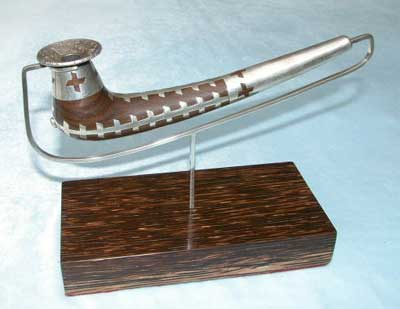
Rouble pipe
What more Siberian for a Siberian pipe than an old Russian rouble? So after I saw the picture in a coin book, I told my friend at the local coin shop that I wanted a particular Russian silver rouble. He was suitably impressed with me apparently becoming a serious coin collector. Nice collector coin. Then I drilled a big hole right through the center of it. Nice pipe. It's okay. My friend at the coin shop has recovered. The other old Russian silver roubles are now more scarce and worth more. Someone's gotta do something to make those old coins increase in value for those coin collectors. And I am going to do it again. The Rouble pipe is made of Lignum vitae ironwood inlaid with pure silver.
One of the features of the pipe is the stem sheath silver being solid with the top strap being solid with the bowl sheath being solid with the bowl end strap being solid with the two side straps being under laid back at the stem sheath, which locks everything in place, facilitated by the design allowing the stem sheath to remain not fully seated until the top strap was pushed down into the inlay recess to bring the stem sheath forward, or something like that. The bottom strap is solid with the stem sheath, and the bowl end is locked into the bowl end stem hole, in case you were curious.
This pipe took one of those awards at an art museum show.
The pipe that escaped
September 2010. I
finally fround the photos of the pipe, in a cardboard box in the
shed. The photos were taken back in 1979.
It's the pipe that escaped, and you could find it. It is out there somewhere. Several of the pipes on this page have been in museum art shows. This pipe was accorded the highest award an artwork can receive at a juried art show in a museum. It was stolen from the show. Is there any greater honor for an artwork? But it is not finished. Nor is its story.
It was the first of the Lignum vitae series, and not signed.
The bowl is rimmed with a US Morgan silver dollar. It is inlaid
with silver, top and bottom, with a gold strip and a fossil mastodon
ivory diamond shape inlay along the sides. 
So here is the story. Being made of Lignum vitae, a well-seasoned piece when I acquired the wood in 1962 at an obscure place, the pipe will stand the test of time far into the future. It is out there somewhere. It was certainly respected by the person who risked the method to acquire it. Of course he or she did not therein pay the proper price, and with the balance in all things being inescapable, elsewhere paid or still owes the remainder of the price by another method. Of course the pipe may have changed hands. So if you see the pipe that escaped, you may rightfully judge the character of its current steward, as is a cost which accompanies expropriated stuff. If you consider the steward to be a person of worthy attributes, properly using and caring for the pipe, you may inform the steward of this offer. If the steward wishes to have the pipe signed, and thus its value greatly increased, she or he may do so for a token portion of the value, with their knowledge of its history told to me as part of the price, under whatever name the steward wishes for the exchange of the knowledge, and be assured that the steward will have it returned with no further obligation. I will derive the story, the only value in any material item. Of course if the steward is a dirtbag, you may do as you wish, or call me, for the story value.
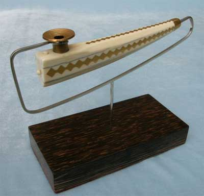
Ivory Pipe
After we made the trade, the guy who just traded away his old collector-quality Kynock .577 Nitro Express rifle cartridge couldn't believe it when I told him he could have the bullet back in original condition if he had a hacksaw to cut the cartridge in half. It was a nice rifle cartridge. Now it's a nice pipe bowl. Well, if you are making a classic old pipe, you gotta have classic old stuff.
As pipe smokers have known throughout history, that foul smelling oozing black goo from anything you smoke, keeps clogging up the works, so its gotta be cleaned out. Do not ever put smoke into your lungs, or do not look in there. So pipes are made to be cleaned. The ivory stem hole plug pin of the Ivory Pipe pulls out of a hole in another ivory pin that is then pulled out of its hole only when the 1907 St. Gauden's US double eagle gold coin bowl rim is positioned just right so the ivory slider can then be slid out so the .577 Kynock rifle cartridge base pipe bowl can slide out so you can clean the thing. Or you can just clean it in place, but I had to attach the brass bowl to the ivory pipe anyway so the slider and pins were a reasonable design.
Walrus ivory tusks were designed to splash around in cold water a lot, grubbing up clams from ocean bottom muck with no small portion of walrus poop. Take the tusks to warm dry land for awhile, and the design features are not optimized. It takes awhile for ivory to stabilize to dry conditions, without cracking, and even then it prefers to avoid rapid changes in humidity. Ivory shrinks a bit as it dries out. So inlay metal into it, and you learn why most people do not inlay metal into it. But it can be done. You just ascribe the minor cracks to character and normal use, not unlike the natural surface cracks of walrus tusks derived from the aforementioned practical use of the things. If you only want to look at something, wiser to buy the picture. In fact, just copy it off the website, and make a collection of pictures of things. Cheaper, and they do not collect as much dust.
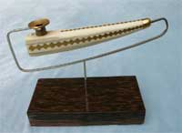
This photo is sose you see that the sterling silver mount is shaped correctly. That angle on the other picture makes it look screwed-up.
Orca Pipe (pictured at the top of the page)
It was at the Howling Dog in Fox Alaska, and I was shaking a leg to the rock and roll band. An art colleague informed me that I must talk to a visiting Native art instructor from Juneau. He was an impressive sort. In our discussion he mentioned that he saw a couple of my pipes in the Anchorage Art museum, and that I should consider doing some natural forms rather than geometric forms on my pipes. He mentioned that I would evolve in that direction anyway. It was a reasonable suggestion but I said that I preferred the old style, which was geometric inlays. In fact, I rather adamantly did not like animal or plant forms for any old style art. At the time, there was something about the discussion that I could not describe, but I genuinely forgot the entire discussion, perhaps on account of the beautiful women with whom I was dancing.
A few years later I was polishing the Orca Pipe I just finished making, when the aforementioned conversation suddenly returned to my memory, including his words which indicated that I would be making natural forms on my pipes, much to my inordinate amusement.
An ivory pin through the pipe stem, through a half slot in the ivory bowl base, locks the bowl in place, but allows easy removal of the bowl for cleaning.
The pod of orcas, baleen and silver on waves of gold, on both sides of the pipe, was one I encountered when rounding Cape Spencer in my kayak, but that is another story perhaps to be scribed somewhere after Stories 3. At the time, I was carrying the Rouble Pipe, with some of that hair of the caribou.
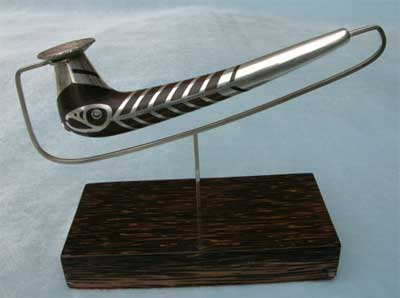
Salmon Pipe
The salmon pipe was a really good idea for a lot of years. The easy half of it was finished years ago, then stuck away in a cardboard box for some reason at the time relating to the orderly planning of procrastination. Then a beautiful woman talked me into joining the Alaska Metal Arts Guild, which cost me 35 bucks for dues. Then later she talked me into committing to entering an artwork in the guild's art show. Easy enough. The show was months away. But then time kept on slipping, slipping slipping...
I found the box with the Salmon Pipe. I noticed that the pipe had more idea finished, than silver and ironwood. I was most amused that I was then actually able to physically achieve certain technical impossibilities of my design, and finally finished the pipe. Then I learned that the entry fee for the show would cost me 30 smackaroos. How do I get talked into these things?
The salmon pipe is a combination of an old style geometric parallel line pattern found on some such pipes, with a natural reason for the parallel lines. The salmon head is a cross of Northwest Coast Indian style and the common salmon head style found more universally among coastal artists farther north. In fact, the salmon use the same design.
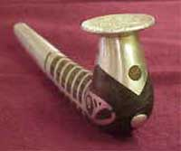
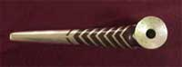
The stem sheath silver is solid with the skeleton which is solid at the top of the ribs. The bottoms of the ribs have one underlaid side, with the other overlaid side having an under pin seated into the Lignum vitae ironwood. How I got the silver over the stem and then into the inlaid recesses, as a single piece, in defiance of the metal and ironwood, is a secret known only to me and my small sledge hammer. The ironwood inlays that go through the silver extend into the ironwood pipe, more thoroughly locking the parts in place.The bowl rim is a 1745 silver Russian Rouble, with a bust of the ever-gracious but a bit murderous Czarina Elizabeth.
The pipe was given an award in the art show.
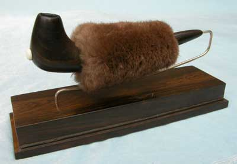
Fur Pipe
Here in the Alaska winter, as you so well know, exposed flesh freezes in seconds. If your winter pipe aint got a beaver fur stem cover, even if you could get it lit before your hand froze, the smoke would freeze in the stem. Everybody knows that.
And well, you see, this piece of Lignum vitae was so good I wanted to get it right without a chance of a screw-up. I set up a jig in a drill press, and plumbed the pipe so the stem holes drilled from each end would meet in the center, right where I wanted them to meet. I was feeling good about this.
Imagine my amusement when the drill emerged out the side of the stem just about the time I thought it was dead center where I was going to stop drilling and come in from the other end. So much for that really good piece of ironwood. The drill went right where the grain of the wood took it.
But for practice, I thought I would try the hole from the other end. The drill came out the other side of the stem. That was enough it frost my sense of craftsmanship. It is a good thing no one was watching. Next I did some serious adjustments, and watched the drill make a third hole out the side of the stem there about in the middle. That pipe-shaped scrap of wood hit the cardboard box of scraps pretty hard.
A few years later I decided I wanted a knock-around pipe, so I dug out the ventilated pipe from the scrap box, and after a lot of gouging around in there with a hand held drill, I got the two holes to join in the middle. Fortunately I have since learned the top secret process of how to make the holes match in the middle. Then I filled the exit wounds on the side of the ventilated pipe with epoxy, and decided to cover the mess up with some leather. Of course I could not find the leather stash in a cardboard box somewhere, but I did have some beaver fur left over from an odd-shaped beaver hat I just made. Well, by the time I got the clipped beaver perfectly sewed and fit tight, the dang thing looked so good I put it on a glass covered stand, and only use it on special occasions, in the winter of course. I just don't tell nobody about all the epoxy-filled holes in the side, under the fur. No, this thing aint for sale. I know enough to keep the evidence sose I am able to deny my own stories.
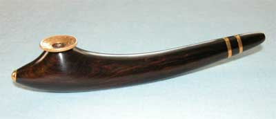
Mpingo Bands Pipe
Mpingo, African Blackwood, Dalbergia Melanoxylon, or something like that. The stuff what clarinets be made of. Superlative wood. A black rosewood. High gloss.
If you want the stuff you gotta take second choice to the French who grab all the good stuff for clarinets. Since it is so valuable for clarinets, all the wood is first cut into clarinet blanks, right out there on the Tanzanian savanna, then the perfect pieces leap to France while the flawed pieces are parceled out to poor artists. The flaws are often only pits that can be carved away in the waste section of an art shape.
What do you do with pieces of wood, one and three eights inches square by nine inches long? They languished in the materials stash for a few years.
An art colleague who made a couple Siberian styled pipes with a variation, produced a variation which he showed us there at Ivory Jack's bar one summer, at a social event out back of course. His pipe answered the above question, to which I created a couple variations. That is how this art thing goes. Data is applied to a mind with a different data base, and comes out looking different. Cute little things, and fun. The bowl rim was a valuable 1881 US $10 Liberty gold collectors coin, and now it is a nice pipe. The bowl is a .45 Colt shell base, smaller than my normal preference, but a .45 is a .45, and that is enough. The other gold is gold. The bowl is locked in place by two stationary pins that intersect slots, then the bowl is turned to its position.
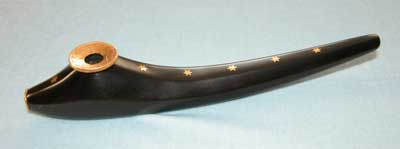
Mpingo Stars Pipe
An old .505 Gibbs rifle shell base bowl, for one's high caliber smoking, is held in place with two pins extending from the old US one dollar gold coin stem hole plug, slipped into the .505 rim groove. The bowl rim is another 1881 US $10 gold coin. The inlaid gold stars complement the stars on the two coins.
I will not, I say again, I will not inlay a bunch of little stars again.
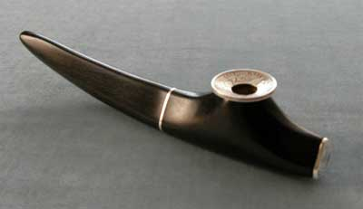
Mpingo 50 Cent Pipe
With notable exceptions, none of them in the US, coin designs represents the nadir of art on one of the most widely distributed proverbial canvases. As usual, the government hires government-mentality people for coin artwork selection, with therefore dull results, yawn. Further, none of those chaps smoked Siberian style pipes. So among the dismal US selection of appropriate bowl rim coins for a Siberian style pipe, a slightly better one is one of the US 50 cent pieces from back there when coins were silver and gold instead of the modern base metal tokens constituting government fraud as usual. Alas, it was a well used coin of its day, and the remaining good ones without the stars worn off, are a scoshe pricey, which is the way it should be. This one is a US 1921 Barber two bit piece. The .505 Gibbs rifle cartridge base bowl is locked into place with a pin attached to the nose hole plug cover. The nose cover is the center of another Barber 50 cent piece, doubling the price. And that silver band around the middle is connected at the bottom with the shield and eagle head from the center of the bowl rim coin. Cute little arrangement.
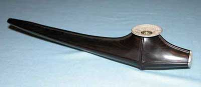
Mpingo Thaler Pipe
This was supposed to be easy. Notice the absence of inlay, except on the bottom. It was not easy. I will not do a raised wood design again. The rim coin is a nice 1789 half Thaler, from one of those Nether-Austro-Germanic States back then. The coin has a quartered pattern that complements the pattern of the raised wood. The bowl is a Kynock .505 Gibbs, locked in place by the pin from the nose plug cover, which is made from another half Thaler, with a centered crown.
Oh yes, the artist makes pipes of these styles, for sale, and you may request specific features, but if you are reading AlaskaStories.com instead of paying attention to your stock portfolio, you cannot afford them. I suggest that you make your own smoking pipe. You will learn more, and not have so much time to be smoking stuff. No material item is ever worth possessing. The only thing you can successfully own, is knowledge. Make what you want, and thus learn the knowledge of it.
But if you did manage your portfolio, outside tech stocks of course, and you want the most practical pipe in the neighborhood, you may inquire. Besides potentially saving your life from marauding Diomeders, the benefits of a good smoking pipe are several, or at least one. On account of the way tobacco is used, occasionally you burn the stuff up before the spring thaw facilitates the arrival of the supply ship from Jamaica. But if you show up at the club or the next party with a pipe like these, someone will offer you some tobacco.
If you always keep an ample supply of fine smokables in your humidor, and only need a quality smoking tub to burn the stuff, your local tobacconist, or any similar establishment of varied social subcultures, has a sufficient selection of tubs to satisfy even the wannabe eccentric. But if you want your great grandchildren to show up at the Antique Road Show in a hundred years, asking about the value of their long dead Great Grand-Dad's old smoking pipe, and be selected for the evening show on TV, with stories told about your era in the ancient game of smoking stuff, that too is what you are paying for when you buy one of these tubs, because it will happen at their choice. Do not forget to take a picture of you smoking it, in a current period setting, and stick the computer chip with that photo in the secret drawer of your antique Chipp And Dale solid walnut desk purported to be used by Thomas Jefferson when he wrote his diary accounts of harvesting the annual hemp crop, with identifiable phrases indicating that not all the crop made it to the fiber mill.
These pipes are unquestionably a wise investment. They will survive much longer than you, proving the wisdom of your investment. If fact, the more you smoke them, the longer they will last beyond your therefore shorter life. Wiser to smoke it only once, when you take the picture, and display it to induce the questions for the stories you can tell among your esteemed colleagues. If you have more money than good sense, you will receive the signed pipe, the full story about it, some related data about the artist, and a patch of caribou hair if you want to try it. But the second patch will cost you dearly.
If you know a person who wisely spent his time learning how to offer more useful services to the people, rather than art, and therefore derived more financial reward, you can suggest to him the wisdom of an investment of this nature, to perhaps participate yourself in smoking his investment at a subsequent party, for the story value. He will certainly not find this web page on his own, or he would not have time to be offering that more valuable service to others.
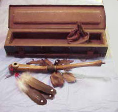
Oosik Pipe
So one of the more routine Alaska stories is the oosik story, told with highly varied arrangements of words, and a straight face, to visitors, while snickers are to be heard. It's about the odd-shaped bone that can be found in the tourist shops. It involves a dissertation on the attributes and endowments of animal anatomy, and a certain profound advantage certain animal males have over human males. Most impressive among the lot are the walrus oosiks. Have you ever seen a walrus that was not smiling, ever so subtly to keep the secret?
Well now, from just what might you think a shaman would make a very powerful pipe not to be smoked without thoughts of precisely what one was doing?
So I was at a social affair, if you can imagine such a thing, out in a local suburb that lower 48ers might suggest was remote wilderness, at an impressive estate that some might view as a little cabin, where only the social insiders knew to arrive, who could be described as a full spectrum of Alaska crazies, all of them scholars and persons of unique standards. The stunning hostess was known for her fire engine red hair. Where else would such a powerful pipe be inaugurated?
It was a crisp autumn night. The bonfire launched a flowing river of sparks up through the birch trees still offering a shower of golden leaves at each passing breeze. The sparks mingled with the northern lights dancing down to meet them in step with a local band seen by the glow of the flames. The tunes spread through the forest where moose had abandoned hope of sleep. There was an array of epicurinary artistry normal only for Alaska, and the beer was locally brewed. At the crest of it all the shaman's pipe was brought forth for its formal inauguration. There was much ado and all was done as it should be done. Among the mix was a fine chap who respectfully declined the honor of the inauguration. Perhaps it was the tobacco, a stronger mix of Captain Black and Prudhoe, not cut with caribou, suitable for a noteworthy shaman and her colleagues. At inquiry, the gentleman mentioned that he had just returned from seven years in prison, for harming no one of course as is the case with about half the prisoners in this nation. He said he didn't suck on one of those things while he was in prison, and he wasn't about to start. Astute scholars are precisely aware of what they do.
This powerful shaman pipe comes with its caribou patch, a medicine bag of secret things, real feathers with old time stem colors, a Wenge wood box assembled with 488 brass screws and lined with padded deer hide, and a few bizarre thoughts.
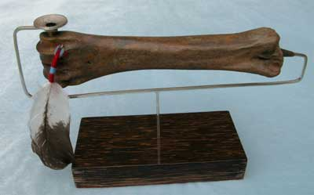
Bison Pipe
It is the metatarsal of an 18,000 year old prehistoric Alaska bison, with a bowl and a bit of a stem. It makes as good a pipe as any old bison hunter would ever want, or anyone else might want. I may still have a bison roast in the freezer, from an old bison hunting story. There were a lot of prehistoric animals roaming around Alaska in prehistory, and they left a lot of bones. The bowl rim coin is an 1893 silver Russian Rouble, on a 44 magnum shell. A brass pin with a small real feather tassel secures the bowl. The short stem is lignum vitae.
One may breathe the sacred spirit of an ancient bison freely roaming the Alaska tiaga, a saber tooth tiger patiently watching it. Wiser to be breathing the spirit, than being the spirit. The tiger got some of the bison. That is why I found the bone, while hunting moose a bit north of Fairbanks.
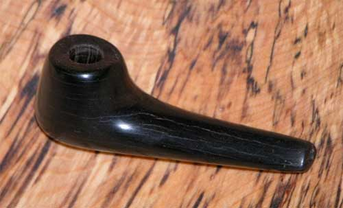
Test piece for a new material.
It is 5.4 million year old wood extracted from an obscure deposit of logs and branches in the Alaska Range. Very dense wood, high luster. Hard clay-like working texture, retaining wood characteristics. It has some compression induced flaws, but some specimens of the wood have adequate flawless areas. Various pieces range from dark brown to black. Some testing and analysis suggest that the material is ideal for a smoking instrument. The wood volatiles have been squeezed out with the long duration of intense compression in a moist environment. The partial carbonization has produced a material that is not volatilized by the heat of normal flame and smoldering leaf. It is the natural and more esthetic equivalent of composite carbon used for high tech smoking pipes. If smoking out of the wood of life (Lignum vitae), the tree of music (Mpingo), walrus ivory, an oosik or an 18,000 year old bison bone does not impress your friends, you can move up to a 5,400,000 year old early Pliocene log from an Ent, and blow that smoke into the party conversation.
A few tentative orders for approval purchase will be accepted, if you managed your portfolio wisely.
The background is local spalted birch.
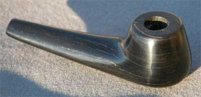
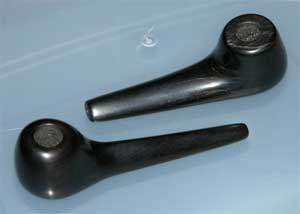
The Ligniwood pipe next to an Mpingo wood pipe.
The Ligniwood is harder, heavier and more lustrous.
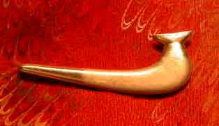
I made this sterling silver tie tack sose my artist colleagues know what I do when I show up at those functions where smoking is wisely frowned upon.
Close-up photos of the bowls on the Smoke Photos page.
Now back to the Raven Pipe, unless someone's preference alters the schedule.
Repair work.....
Oh, and if you have more money than good sense, and distinguish yourself above your colleagues who smoka da leaf, by acquiring one of my pipes, usually custom, if you are sufficiently patient, besides holding more story value than nearly every other pipe outside museums, and many inside museums, these pipes come with a lifetime care, repair and maintenance service, at a most reasonable rate per request, sometimes without charge if your story is good enough. These pipes are not like any standard commercial product. They involve highly individual attributes. You will get to know and admire their personal nuances. But you may get fumble-fingered and drop it off the 59th floor living room balcony of the Marina City East Tower Apartment in Chicago, denting the roof of a Lamburguini parked at the North State Street Entrance. Or you may not fool a couple marauding Diomeders, East Bay boys or BATF thugs, with the old fake gun trick, so you have to beat them into unconsciousness with the pipe, to escape. You may have to hastily pry the boat trailer hitch onto the ball on your Humvee bumper, and the only pry bar you have is your pipe. You might suddenly notice in horror, that you are too late to stop a lamentably ignorant friend from banging the pipe against the yacht railing to clean out the ashes. You may not have the tools or materials for the pipe-saving surgery. The reason every pipe that was ever made does not still exist, when it otherwise would if made from materials found in these pipes, is due to the hazards of a pipe's life (humans), and insufficient concern to repair any otherwise non-fatal wounds, and few are fatal, no matter what scant portion of the pipe remains. If something was made by humans, any damage can be repaired. Repairs done by the original artist add value to the art. Oh, the duration of that lifetime service opportunity is my lifetime. After that you and the pipe are on your own, and the pipe will outlast you by the lifetime of humans if its subsequent servants wish.
Smoking da pipe...
The world teeters on the brink of disaster, albeit as usual. Society raises its fist in anger at whatever society is told to next hate after tiring of hating the last whatever is was told to hate. The fear of evil and anarchy rampages around the world with each setting and rising of the sun, lashing out at hapless minds. Terror looms, and security, worshiped by the gullible masses, polishes its black jackboots. Amused by it all, and a current social demon regardless of which poison burns in his bowl, the pipe smoker, the person with time to think, will be found smiling at what appears to be curls of mere smoke wafting through the air. Who else can be found thinking, and thus smiling at the fears that these humans create for their mind?
Alaska Cigar Humidor...
For those times you want to leisurely walk through a beautiful forest, walk up to a tree, open its cabinet door, and select a fine, tree-aged cigar.....
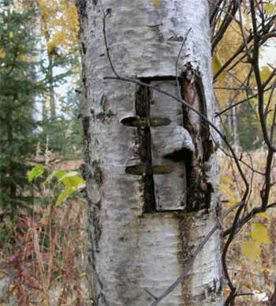
The Birch tree humidor is stocked with truly fine cigars, including some JR Ultimates, and has served well for an annually increasing number of years.
A magnificent cigar story...
You may be sufficiently intelligent to not get near tobacco smoke, poison that it is, but if you wisely seek to learn the knowledge of what you would otherwise avoid, consider JR Cigar. He offers valuable and fun cigar industry knowledge rarely so plainly stated in public. A few editions of his catalog are humorous reading in your library. He sells more cigars than any other retailer, of the spectrum of brands. His popularity results from his printing the truth about the cigar industry, which the common people appreciate and enjoy. He also reveals fun knowledge about humans.
His finest cigar among all the brands he retails, in my opinion is the JR Ultimate No. 1, the best of his own brand. A box of 25 sell for 90 bucks, at the end of 2006. All well and good. JR also sells JR Alternative Cigars, which are the significantly less expensive alternatives to all the expensive brand name cigars, such as JR Alternative to Partagas, JR Alternative to H. Upmann, and the whole long list of them. He guarantees that they taste the same as the original band name cigars, because he contracts the same manufacturers to make the same cigars with the same tobacco blends, but with his label on them. He sells so many cigars that he can do that. All well and good. And JR openly demonstrates that all those brand name cigar companies are bullshitting people about the value of their brand name cigars, by producing the JR Alternative to JR Ultimate No. 1, which are the same Ultimate No. 1 cigar, with the JR Alternative label. A bundle of 20 sell for 27 bucks, at the end of 2006. And he is happy to sell you a bundle, knowing that there are enough humans to buy enough of each label. They are both offered in the same catalog. You will rarely find a businessman so openly honest.
So if you have not sent the AlaskaStories.com web slave a trifling for the modicum of entertainment with which you have so foolishly squandered your otherwise valuable time, order a bundle of JR Alternative to JR Ultimate No. 1's (Maduro wrapper) and send them to the web slave, or any such offering. He has some JR Ultimate No. 1 labels he can scotch tape to the JR Alternative to JR Ultimate No.1 cigars so he can elevate the illusion of his financial success among his colleagues who know better.
Enough of this stuff for the moment. I think the web slave is just blowing smoke.
Stories 1
Stories 2
Stories 3
Stories 4
Stories 5
Stories 6
Stories 7
Stories 8
Stories 9
Stories 10
Stories 11
Stories 12
Stories 13
Stories 14
Places
Concepts
Smoke Photos
Smoke Others
Stuff
Links
Home